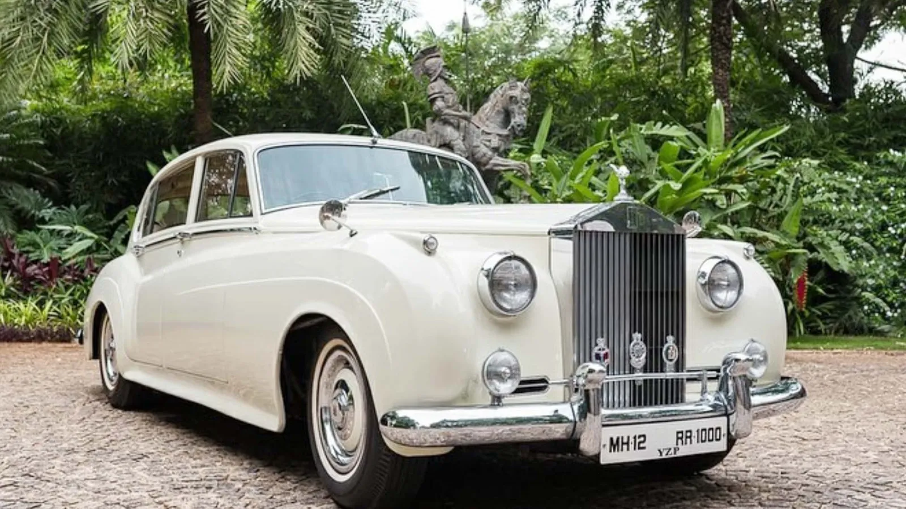

Car Model 1

Name: Supra
Brand: Toyota
Price: 1,00,00,000
Color: Black
The Toyota Supra was first introduced in 1978 as a more performance-oriented variant of the Toyota Celica. Over the years, it has gone through several generations, each with its own design and performance characteristics. The Supra has been known for its powerful engines and excellent performance. The Supra is a popular choice for aftermarket modifications, and many enthusiasts. The Toyota Supra has a strong racing heritage and has been used in various motorsport events, including drifting, drag racing, and sports car racing.Car Model 2
Name: G63
Brand: Mercedes
Price: 3,00,00,000
Color: Grey
The G-Class, short for Gelandewagen, was originally developed for military and off-road use. It was first introduced in 1979.The G63 is famous for its exceptional off-road performance. The G63's design is characterized by its boxy, squared-off shape, prominent fender flares, and a spare wheel mounted on the rear door.The G63 is equipped with modern technology, including a digital dashboard, advanced driver assistance systems, and connectivity features.Car Model 3

Name: Lamborghini Aventador
Brand: Lamborghini
Price: 5,00,00,000
Color: Grey
The Lamborghini Aventador made its debut at the 2011 Geneva Motor Show. It has seen several variants and special editions over the years, including the Aventador LP 700-4, Aventador S, Aventador SVJ (Superveloce Jota), and various limited-run models. The Aventador is powered by a naturally aspirated V12 engine. The Aventador S, for example, features a 6.5-liter V12 engine that produces over 700 horsepower, while the SVJ model pushes the power output even higher, delivering more than 770 horsepower. These powerful engines allow the Aventador to accelerate from 0 to 60 mph in just a few seconds and reach top speeds of around 217 mph (350 km/h). Lamborghini uses carbon fiber extensively in the Aventador's construction to keep the car's weight down and enhance its structural rigidity.Car Model 4
Name: Phantom I
Brand: Rolls Royce
Price: 50,00,000
Color: Milky white
The Phantom I was introduced as the replacement for the Silver Ghost, which was Rolls-Royce's flagship model for many years. The Phantom I was followed by the Phantom II in 1929, continuing Rolls-Royce's legacy of producing luxury automobiles. The Phantom I attracted a wealthy and prestigious clientele, including royalty, celebrities, and industrialists. It was a symbol of status and refinement during the "Roaring Twenties."Car Model 5

Name: Range Rover
Brand: Land Cruiser
Price: 2,50,00,000
Color: Black
The Range Rover Vogue is part of the Range Rover line, which was first introduced by Land Rover in 1970. It is one of the most recognizable luxury SUV brands in the world. The Range Rover Vogue is renowned for its luxurious interior, high-quality materials, and advanced comfort features. The Range Rover Vogue competes with other luxury SUVs like the Mercedes-Benz GLS, BMW X7, and Audi Q7.